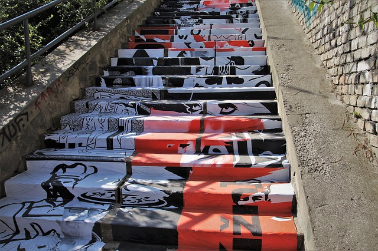
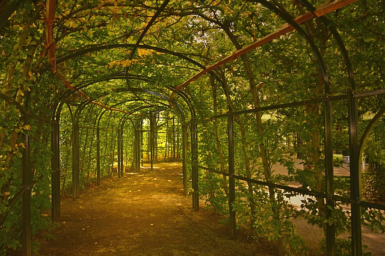
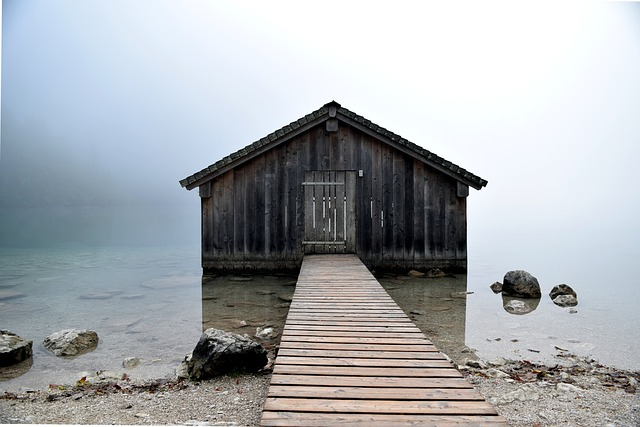

Este estilo revoluciona totalmente un diseño web y evita que tengas que hacer .png con transparencias.
Nacido de la web 2.0, estos bordes fueron creados para estilizar cualquier página web y darle un aspecto moderno en comparación a aquellos sitios web antiguos con bordes totalmente cuadrados.
Este estilo es el típico que suele utilizarse en las galerias de imágenes. Brilla por sus bordes redondeados y blancos creando un efecto mágico al más puro estilo de una fotografía instantánea.
